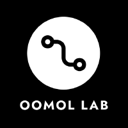
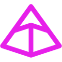

Agent frameworks and SDKs for terminal coding
Frameworks and SDKs for building agents in code. Of the 233 tools on our coding in the terminal page, 32 fit this narrower job. By pricing: 29 open source, 2 free or freemium, 1 pricing on the maker's site. The most-starred open repos here are Pi (118,955 stars), HyperFrames (75,783 stars), Open Interpreter (68,731 stars). Most come from the frameworks (9), coding (6), browser/computer use (5) categories.
Updated
Pi
Minimal, extensible open-source terminal coding agent and agent toolkit from Earendil, with a multi-provider LLM API, TypeScript SDK, RPC mode and installable extensions, skills and themes.
Added
HyperFrames
HeyGen's open-source framework that renders HTML, CSS and animations into deterministic MP4 videos, usable from a CLI or by coding agents through skills.
Added
Open Interpreter
Terminal coding agent forked from OpenAI's Codex and tuned for low-cost and open-weight models, with switchable harness modes that imitate tools like Claude Code.
Added
opencodex
A local provider proxy that lets OpenAI Codex (CLI, app and SDK) and Claude Code run on other model providers such as Claude, Gemini, Grok, DeepSeek or local Ollama models.
Added
Botpress
Platform for building and deploying LLM-powered chatbots and agents, with a visual studio, integrations hub, CLI and SDK.
Added
ai-memory
Fabio Akita's open-source long-term memory layer for coding agents: one Rust binary that keeps plain-markdown project memory and typed handoffs shared across 20+ harnesses such as Claude Code, Codex, Cursor and Gemini CLI, so you can switch agents, machines or teammates without re-explaining the project.
Added
Munder Difflin
Free, open-source harness that runs Claude Code, Codex, Gemini CLI and other terminal agents together like an office.
Added
Claude Agent SDK (Python)
Anthropic's Python SDK for building agents on Claude Code's agent loop, with the CLI bundled, custom tools and hooks.
Added
ZCode
ZCode is Z.ai's open-source AI coding workspace and official harness for GLM-5.3, with a desktop app, web interface and terminal agent that run multiple agents on long goals, plus control from WeChat, Feishu or Telegram.
Added
Agent-Native (Builder.io)
Open-source TypeScript framework for building agents that come with their own app UI; each action is shared by the UI, agent, API, CLI, MCP and A2A.
Added

Open Connector
Open-source auth gateway connecting SaaS apps to AI agents via SDK, CLI and MCP.
Added
Agent Desktop
Vercel Labs' open-source computer-use layer that lets AI agents read and operate desktop apps on macOS, Windows and Linux through the OS accessibility tree instead of guessing from screenshots. A snapshot returns JSON with a stable ref for every clickable element; the agent acts on a ref and snapshots again to verify, which keeps actions safe to retry, saves tokens by scoping to one app region and lets several agents work in parallel. Rust CLI plus C library, installed with npm install -g agent-desktop. Apache-2.0.
Added
OpenGAP
Framework-agnostic, git-native standard and CLI for defining AI agents so a repository becomes a runnable agent.
Added
LCU
Brings the computer-use runtime from the ChatGPT desktop app to Claude Code, Codex CLI and Pi, so any agent harness can see and control your desktop without a Codex sign-in.
Added
Unreal Agent
Unreal Agent is an async-first agent harness from Unreal Labs, a team researching how to make agentic workflows efficient. The library handles inputs with stable IDs and deduplication, append-only sessions that can be forked, and a coordinator that manages each model turn and translates tool calls into operations. It ships with a cloud agent runner, a terminal UI and benchmark runners, under the MIT license.
Added
LongHorizon-Harness
LongHorizon-Harness wraps Claude Code, Codex, OpenCode or DeepSeek Harness in a plan, act, verify and checkpoint loop so computer-use agents can keep working on one goal across desktop apps and the terminal for dozens of hours and recover after failures.
Added
Agmsg
Cross-vendor messaging for CLI AI coding agents — let Claude Code, Codex, Gemini & Copilot talk to each other in one team. Bash + SQLite, no daemon, no framework
Added
Lightswind UI Library
The AI-native CLI-first React component library. 160+ animated, accessible, production-ready components with MCP Server support for Cursor, Claude & GitHub Copilot.
Added

Pydantic Deep Agents
Self-hosted terminal AI assistant and Python framework on Pydantic AI, with tool calling, sandboxed execution, multi-agent teams and checkpoints.
Added
AgenticX
AgenticX is an open-source agent project that helps builders handle unified, production-ready multi-agent platform — Python SDK + CLI (agx) + Studio.
Added
AutoCua
AutoCua is an open-source computer use agent that drives real desktop apps with mouse and keyboard on Windows, macOS and Linux, and also works in Chrome, Firefox and other browsers, in a real terminal and on an iPhone, iPad or iOS Simulator. It is built as a multi-agent harness you install with pip, so one agent can carry a task across the desktop, the web, the shell and a phone.
Added
Dsh_Desktop
Dsh_Desktop is an open-source agent project that helps builders handle deepSeek Harness (dsh) Windows desktop client - bundled Node.js + dsh CLI.
Added
OpenGCUA
Open stack from Tongyi Lab's MAI-UI team for generalist computer-use agents that combine GUI clicks, accessibility trees, terminal commands, APIs and code: an OSWorld harness, a macOS real-device harness, a cross-device SDK and published task runs of eight frontier models.
Added
AgentEnv Framework
AgentEnv Framework is Scale AI's open-source Python SDK and CLI for building RL environments for agents: containerized worlds with realistic apps and data behind an MCP gateway, plus tasks (as DAGs) that grade any agent in any sandbox.
Added
Vue Tui
Vue Tui is an open-source agent project that helps builders handle vue framework for terminal UIs.
Added
Tinystruct
Tinystruct is an MCP server that gives agents a way to handle lightweight, modular Java application framework for web and CLI development, designed.
Added
Dsh Trading
Dsh Trading is an open-source agent project that helps builders handle agent-native trading terminal built on DeepSeek Harness.
Added
Browsentic
Browsentic is an MCP server that gives agents a way to handle agentic browser harness: your agent CLI in your real, signed-in browser.
Added
Pi Rust
Pi Rust is an open-source agent project that helps builders handle rust-native, library-first coding-agent runtime and terminal CLI inspired by Pi, with composable.
Added
CreateOS Sandbox
CreateOS Sandbox gives each AI agent its own Firecracker micro-VM with a private kernel and network, controllable through an SDK, CLI, MCP server or REST API.
Added
Kilobat CLI
Kilobat CLI is a macOS network diagnostics toolkit with a local stdio MCP server so coding agents can probe DNS, TLS, routes and connectivity from the terminal.
Added
SEAL
SEAL is an MCP server (npx sealnet-mcp) that lets AI agents send and request files and secrets with end-to-end encryption. After pairing, the default delivery route sends the file to the user's SEAL inbox and returns a handle to the model. Also has a browser app, CLI and SDK; free up to 1 GB per seal.
Added
GitHub repos (30)
| Repo | GitHub stars | Licence | Last push |
|---|---|---|---|
| Pi ↗ | 118,955 | MIT | 2026-10-30 |
| HyperFrames ↗ | 75,783 | Apache License 2.0 | 2026-10-30 |
| Open Interpreter ↗ | 68,731 | Apache License 2.0 | 2026-10-11 |
| opencodex ↗ | 18,058 | MIT | 2026-10-29 |
| Botpress ↗ | 14,974 | MIT | 2026-10-28 |
| ai-memory ↗ | 14,529 | MIT | 2026-10-30 |
| Munder Difflin ↗ | 9,201 | MIT | 2026-10-27 |
| Claude Agent SDK (Python) ↗ | 8,393 | MIT | 2026-10-30 |
| ZCode ↗ | 8,378 | — | 2026-10-30 |
| Agent-Native (Builder.io) ↗ | 7,557 | — | 2026-10-30 |
| Open Connector ↗ | 6,140 | Apache License 2.0 | 2026-10-30 |
| 3,416 | — | — | |
| OpenGAP ↗ | 2,983 | MIT | 2026-07-02 |
| LCU ↗ | 2,319 | — | 2026-10-30 |
| Unreal Agent ↗ | 2,218 | — | 2026-10-06 |
Top 15 of 30 by stars. Stars and licence come from each repo, checked when the listing was last verified.
FAQ
What are the best AI tools for coding in the terminal focused on agent frameworks and SDKs?
We list 32. The first three by GitHub stars and featured status are Pi: Minimal, extensible open-source terminal coding agent and agent toolkit from Earendil, with a multi-provider LLM API, TypeScript SDK, RPC mode and installable extensions, skills and themes.; HyperFrames: HeyGen's open-source framework that renders HTML, CSS and animations into deterministic MP4 videos, usable from a CLI or by coding agents through skills.; Open Interpreter: Terminal coding agent forked from OpenAI's Codex and tuned for low-cost and open-weight models, with switchable harness modes that imitate tools like Claude Code.
Are there free or open-source options?
Yes: 29 open source, 2 free or freemium, 1 pricing on the maker's site. Pricing is as each maker states it.
More from coding in the terminal
Tools are grouped by what each says it does. Missing one? Submit it free.